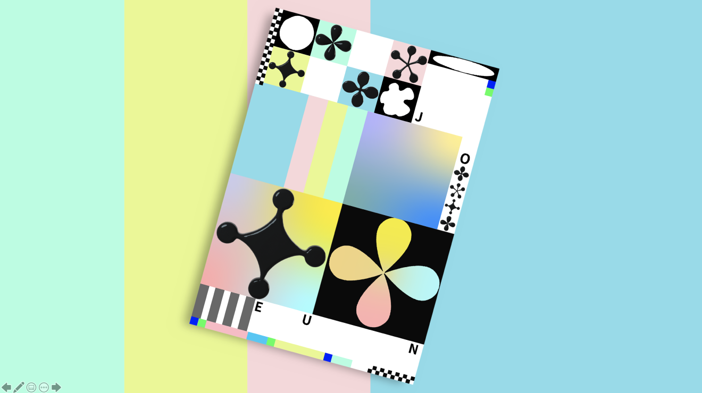
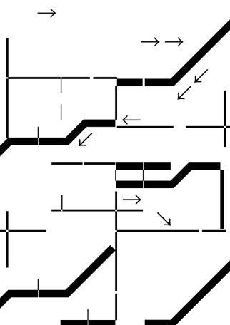

코어 오브제트 저장소의 모습. 나를 구성하는 핵심 오브젝트들로 구성된 나만의 공간이다.
사용자는 돌아가는 구슬들 중 궁금한 구슬을 드래그 해서 자세히 알아볼 수 있다.
MY CORE OBJECT
PATTERN
JOAA
Screen Shot
Poster
Identity Design
내가 살아오며 거부해온 것들을 모아 보여줌으로써 나의 정체성을 간접적으로 규정해써 보고자
한 작업이다.
휴지통 아카이브 내 하위 폴더는 ‘히스토리/ 라이프스타일/ 미래 삭제 예정/ 복구 예정’으로 구성되어 각각의 물건이 분류되어 있다.
나를 설명하는 문장 5개를 주제로 작업한 패턴포스터.
왼쪽부터 ‘조각조각 콜렉터 / 경계태세로 경계 넘기 / 깊게 들이마시고(흡) 남김 없이 내뱉기(후-) / 장르 불문 잡식가’의 문장을 나타낸 것이다.
인간 내면의 것들을 그래픽디자인하고 일러스트로 만들어내는 작가로서의 나의 브랜드를 기획하고 디자인하였다.
인간의 마음속 그림자와 꿈틀거리는 마음을 사과와 지렁이로 상징화하였다.


Core Memory
개인의 생각, 행동에 결정적인 역할을 하고 하나의 인격을 만드는 역할
-> Core Object
<20 SENTENCES>
1. 느슨한 성실함
2. 미룰 수 있을 때까지 최선을 다해 미뤄버리기
3. 길쭉 흐느적
4. 투명한 물에 비치는 파아란 하늘과 떠다니는 유리구슬
5. 객관논리경험계획
6. 불분명한 것들이 분명할 수 있다면
7. 좋은조은
8. 잔잔하게 날카로운
9. 작은 순간도 아름답게
10. 무엇이든 만듭니다
11. 너한테 맡기느니 내가 한다
12. 치즈는 싫어하는데 피자는 좋아하고 회는 싫어하지만
초밥은 좋아하는 생각정리는 좋아하지만 책상정리는 안하는
13. 가끔 뜬금포
14. 홈 스위트 홈
15. 온전한 나만의 시간
16. 뭐든 일단 하자
17. 차분한 듯 안 차분한
18. 나는 내가 제일 소중해
19. 작은 것들이 사실 정말 큰 것일지도
20. 이상한 정원
<Main Module>
<PATTERN_1>
<PATTERN_2>
관련 문장
-미룰 수 있을 때까지 최선을 다해 미뤄버리기
-객관논리경험계획
사용 모듈
<PATTERN_2>
<PATTERN_3>
불분명명한 것들이 분명했으면
<PATTERN_4>
사소한 것도 아름답게
<PATTERN_5>
1. 힐링 브랜드 카테고리 별 정리 (공간, 제품, 체험, 관광, 게임, 음악 등의 카테고리)
-> 이전부터 힐링 관련 브랜드들이 많이 생겨나고 있었지만, 최근 들어 코로나의 영향인지 셀프 가드닝, 공예 체험,
힐링 카페 등의 이용이 증가했다고 한다. 주변에 많이 생기고 있는 힐링 브랜드들과 컨텐츠들을 보기 쉽게 분류+정리해주기
2. 서로의 힐링 경험 공유
-> 리뷰와 별점을 통한 좋은 힐링 컨텐츠, 브랜드 파악
3. 오늘의 힐링 스토리
-> 인스타, 페이스북의 스토리 기능. 그 날의 사소한 경험들도 공유하고자 하는 특성(작은 공감과 위로의 순간)
4. 작은 고민 털어놓기 게시판(응원의 메세지)
-> 에브리타임, 고민갤러리 등과 같이 어디가서 말하기 애매한 고민들을 털어놓는 소통의 장소